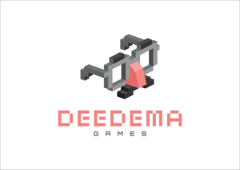

2017 Deedema ALL RIGHTS RESERVED
Business Meeting Area http://deedema.com
Deedema is a mobile game developer founded in 2016. 'Hardanbil' is a freemium mobile MMO strategy video game developed by Deedema. In Hardanbil players build a deck, train troops and attack other online players in different battle areas to earn items, which can be used to upgrade troops.